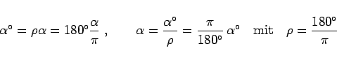

Inhalt Index DeskTop Bronstein

 Funktionen und ihre Darstellung Trigonometrische Funktionen (Winkelfunktionen) Grundlagen Wertebereiche und Funktionsverläufe der trigonometrischen Funktionen
Funktionen und ihre Darstellung Trigonometrische Funktionen (Winkelfunktionen) Grundlagen Wertebereiche und Funktionsverläufe der trigonometrischen Funktionen


Funktionswerte im Bogenmaß, d.h. in der Einheit Radiant, können mit Hilfe von
|  | (2.73) |
umgerechnet werden (s. Einheit des Grad- und des Bogenmaßes).